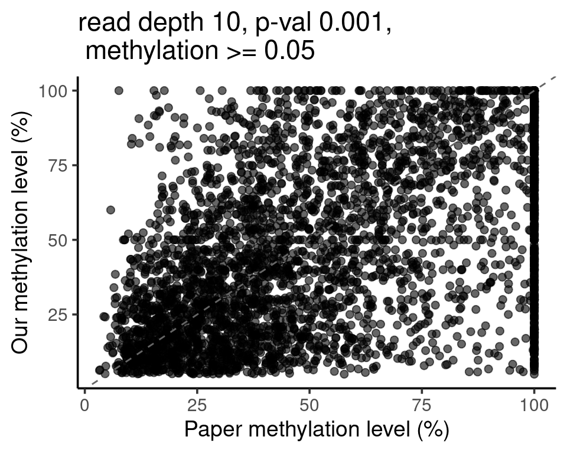
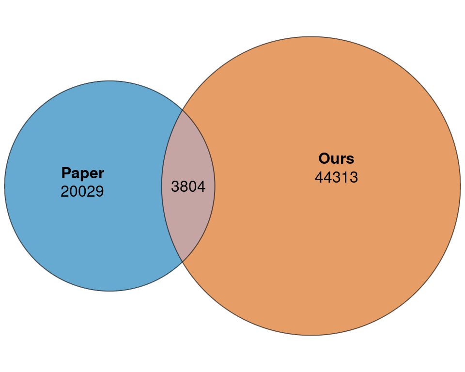
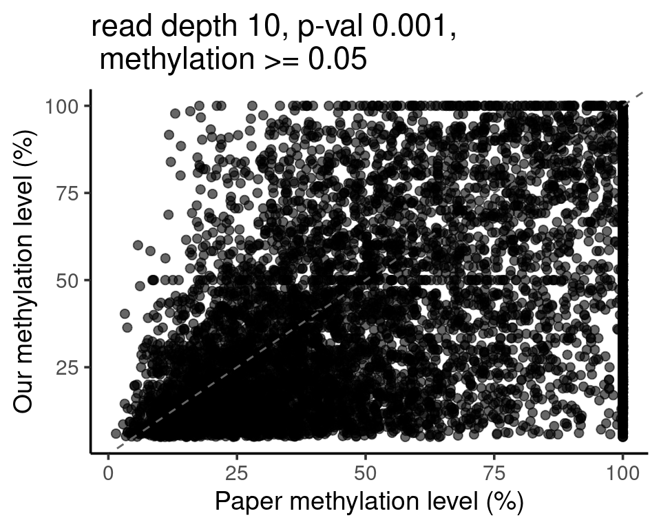
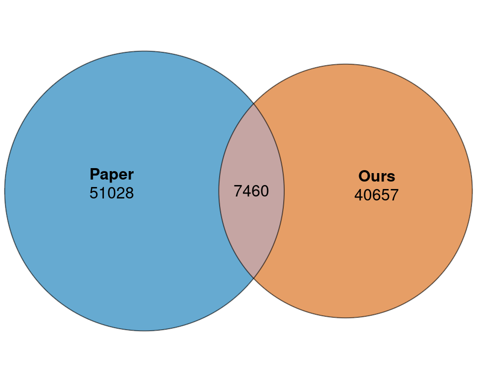
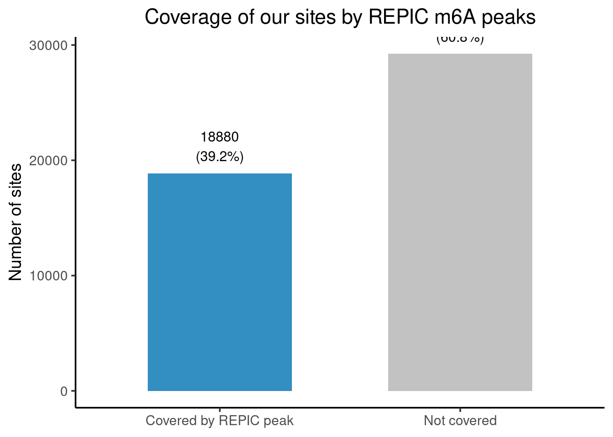
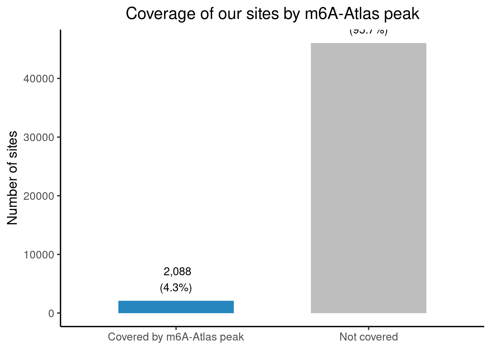

Last updated: 2026-02-03
Checks: 6 1
Knit directory: camseq-m6a/
This reproducible R Markdown analysis was created with workflowr (version 1.7.1). The Checks tab describes the reproducibility checks that were applied when the results were created. The Past versions tab lists the development history.
The R Markdown file has unstaged changes. To know which version of the R Markdown file created these results, you’ll want to first commit it to the Git repo. If you’re still working on the analysis, you can ignore this warning. When you’re finished, you can run wflow_publish to commit the R Markdown file and build the HTML.
Great job! The global environment was empty. Objects defined in the global environment can affect the analysis in your R Markdown file in unknown ways. For reproduciblity it’s best to always run the code in an empty environment.
The command set.seed(20250226) was run prior to running the code in the R Markdown file. Setting a seed ensures that any results that rely on randomness, e.g. subsampling or permutations, are reproducible.
Great job! Recording the operating system, R version, and package versions is critical for reproducibility.
Nice! There were no cached chunks for this analysis, so you can be confident that you successfully produced the results during this run.
Great job! Using relative paths to the files within your workflowr project makes it easier to run your code on other machines.
Great! You are using Git for version control. Tracking code development and connecting the code version to the results is critical for reproducibility.
The results in this page were generated with repository version 87fbf27. See the Past versions tab to see a history of the changes made to the R Markdown and HTML files.
Note that you need to be careful to ensure that all relevant files for the analysis have been committed to Git prior to generating the results (you can use wflow_publish or wflow_git_commit). workflowr only checks the R Markdown file, but you know if there are other scripts or data files that it depends on. Below is the status of the Git repository when the results were generated:
Ignored files:
Ignored: .Rhistory
Unstaged changes:
Modified: analysis/compare_round3_sample234_otherm6adb.Rmd
Note that any generated files, e.g. HTML, png, CSS, etc., are not included in this status report because it is ok for generated content to have uncommitted changes.
These are the previous versions of the repository in which changes were made to the R Markdown (analysis/compare_round3_sample234_otherm6adb.Rmd) and HTML (docs/compare_round3_sample234_otherm6adb.html) files. If you’ve configured a remote Git repository (see ?wflow_git_remote), click on the hyperlinks in the table below to view the files as they were in that past version.
| File | Version | Author | Date | Message |
|---|---|---|---|---|
| Rmd | 87fbf27 | XSun | 2026-02-03 | update |
| html | 87fbf27 | XSun | 2026-02-03 | update |
| Rmd | f0132bd | XSun | 2026-02-03 | update |
| html | f0132bd | XSun | 2026-02-03 | update |
library(data.table)
library(gridExtra)
library(ggplot2)
library(eulerr)
library(GenomicRanges)
# Helper to build file paths
make_file <- function(rd, p_cutoff_str) {
sprintf(
"/project/xinhe/xsun/camseq/pipeline/workspace_round3/count_sites/pileup/processed_binomp_%s_1n/sample05_with_id_read%d_binomp%s.tsv",
p_cutoff_str, rd, p_cutoff_str
)
}
rd <- 10
pc <- "0.001"
me0 <- 0.05
file_ours <- make_file(rd, pc)
df_ours_raw <- fread(file_ours)
# normalize methylation once; build site once
df_ours_raw[, site := paste0(ref, "-", pos)]
df_ours_f <- df_ours_raw[methylation_mepct >= me0*100]
our_sites <- df_ours_f$siteWe compare the m6a sites called from sample 2-4 (at p<0.001, methylation level > 0.05, read depth >=10, https://xsun1229.github.io/camseq-m6a/QC_round3.html) with some other databases.
The sites are included in Supplementary Data 1, containing the cell types below
| Category | Cell type / Sample | Differentiation stage | RNA preparation | Notes |
|---|---|---|---|---|
| Cell line | HeLa | – | poly(A)-selected | Non-immune epithelial cancer cell line |
| Cell line | HEK293 | – | poly(A)-selected | Human embryonic kidney cells |
| Cell line | HEK293 | – | rRNA-depleted (ribo) | Includes pre-mRNA and intronic RNA |
| Cell line | HepG2 | – | poly(A)-selected | Human liver cancer cell line |
| Primary immune | HSPC ribo – d0 | CD34⁺ HSPCs | rRNA-depleted (ribo) | Stem/progenitor stage |
| Primary immune | HSPC ribo – d3 | Early myeloid commitment | rRNA-depleted (ribo) | Early monocytopoiesis |
| Primary immune | HSPC ribo – d6 | Late monocyte progenitors | rRNA-depleted (ribo) | Pre-monocyte stage |
| Primary immune | HSPC ribo – d9 | Monocytes | rRNA-depleted (ribo) | Closest proxy to macrophages |
Paper 2: REPIC: a database for exploring the N6-methyladenosine methylome, PMID: 32345346
This paper provides peak-level calls, not single-nucleotide–resolution sites.
data download: https://repicmod.uchicago.edu/repic/download.php
MONO-MAC-6
Paper 3: m6a-atlas
peak-level calls, not single-nucleotide–resolution sites.
MONO-MAC-6.
df_paper_raw <- readxl::read_excel("/project/xinhe/xsun/camseq/pipeline/data/m6a_PMID35288668.xlsx", sheet = 8)
df_paper_raw <- as.data.table(df_paper_raw)
df_paper_raw$Chrom <- gsub(df_paper_raw$Chrom, pattern = "chr", replacement = "")
df_paper_raw[, site := paste0(Chrom, "-", Position)]
paper_sites <- df_paper_raw$site
DT::datatable(head(df_paper_raw),caption = htmltools::tags$caption( style = 'caption-side: left; text-align: left; color:black; font-size:150% ;','Several sites reported by camseq paper'),options = list(pageLength = 10) )print(paste0("Total number of m6a sites reported by the paper ", nrow(df_paper_raw)))[1] "Total number of m6a sites reported by the paper 23833"rd <- 10
pc <- "0.001"
me0 <- 0.05
inter_sites <- intersect(our_sites, paper_sites)
# merge only the needed columns from paper (smaller/faster)
df_merge <- merge(
df_ours_f,
df_paper_raw[, .(site, `m6A fracrion (%)`)],
by = "site",
all = FALSE
)
p <- ggplot(df_merge, aes(x = `m6A fracrion (%)`, y = methylation_mepct)) +
geom_point(alpha = 0.6, size = 2) +
geom_abline(slope = 1, intercept = 0, linetype = "dashed", color = "grey40") +
#coord_equal(xlim = c(0, 1), ylim = c(0, 1)) +
labs(
x = "Paper methylation level (%)",
y = "Our methylation level (%)",
title = sprintf("read depth %s, p-val %s,\n methylation >= %s", rd, pc, me0)
) +
theme_classic(base_size = 14)
fit <- euler(c(
Paper = length(paper_sites) - length(inter_sites),
Ours = length(our_sites) - length(inter_sites),
"Paper&Ours" = length(inter_sites)
))
p_venn <- plot(
fit,
fills = c("#0072B2", "#D55E00"),
alpha = 0.6,
labels = TRUE,
quantities = TRUE,
)
p
| Version | Author | Date |
|---|---|---|
| 87fbf27 | XSun | 2026-02-03 |
p_venn
| Version | Author | Date |
|---|---|---|
| 87fbf27 | XSun | 2026-02-03 |
df_paper_raw1 <- readxl::read_excel("/project/xinhe/xsun/camseq/pipeline/data/m6a_PMID35288668.xlsx", sheet = 6)
df_paper_raw2 <- readxl::read_excel("/project/xinhe/xsun/camseq/pipeline/data/m6a_PMID35288668.xlsx", sheet = 7)
df_paper_raw3 <- readxl::read_excel("/project/xinhe/xsun/camseq/pipeline/data/m6a_PMID35288668.xlsx", sheet = 8)
df_paper_raw <- rbind(df_paper_raw1,df_paper_raw2,df_paper_raw3)
df_paper_raw <- as.data.table(df_paper_raw)
df_paper_raw$Chrom <- gsub(df_paper_raw$Chrom, pattern = "chr", replacement = "")
df_paper_raw[, site := paste0(Chrom, "-", Position)]
df_paper_raw <- df_paper_raw[!duplicated(df_paper_raw$site),]
paper_sites <- df_paper_raw$site
DT::datatable(head(df_paper_raw),caption = htmltools::tags$caption( style = 'caption-side: left; text-align: left; color:black; font-size:150% ;','Several sites reported by camseq paper'),options = list(pageLength = 10) )print(paste0("Total number of m6a sites reported by the paper ", nrow(df_paper_raw)))[1] "Total number of m6a sites reported by the paper 58488"inter_sites <- intersect(our_sites, paper_sites)
# merge only the needed columns from paper (smaller/faster)
df_merge <- merge(
df_ours_f,
df_paper_raw[, .(site, `m6A fracrion (%)`)],
by = "site",
all = FALSE
)
p <- ggplot(df_merge, aes(x = `m6A fracrion (%)`, y = methylation_mepct)) +
geom_point(alpha = 0.6, size = 2) +
geom_abline(slope = 1, intercept = 0, linetype = "dashed", color = "grey40") +
#coord_equal(xlim = c(0, 1), ylim = c(0, 1)) +
labs(
x = "Paper methylation level (%)",
y = "Our methylation level (%)",
title = sprintf("read depth %s, p-val %s,\n methylation >= %s", rd, pc, me0)
) +
theme_classic(base_size = 14)
fit <- euler(c(
Paper = length(paper_sites) - length(inter_sites),
Ours = length(our_sites) - length(inter_sites),
"Paper&Ours" = length(inter_sites)
))
p_venn <- plot(
fit,
fills = c("#0072B2", "#D55E00"),
alpha = 0.6,
labels = TRUE,
quantities = TRUE,
)
p
| Version | Author | Date |
|---|---|---|
| 87fbf27 | XSun | 2026-02-03 |
p_venn
| Version | Author | Date |
|---|---|---|
| 87fbf27 | XSun | 2026-02-03 |
df_paper_raw <- fread("/project/xinhe/xsun/camseq/pipeline/data/m6a_REPIC_MONO-MAC-6_hg38.txt")
gr_ours <- GRanges(
seqnames = paste0("chr", df_ours_f$ref),
ranges = IRanges(start = df_ours_f$pos, end = df_ours_f$pos),
strand = df_ours_f$strand
)
df_paper <- copy(df_paper_raw)
# remove strand brackets
df_paper[, strand := sub(".*\\[|\\]", "", pos)]
# remove strand part
coord <- sub("\\[.*\\]", "", df_paper$pos)
df_paper[, chr := sub(":.*", "", coord)]
df_paper[, start := as.integer(sub(".*:(\\d+)-.*", "\\1", coord))]
df_paper[, end := as.integer(sub(".*-(\\d+)", "\\1", coord))]
gr_paper <- GRanges(
seqnames = df_paper$chr,
ranges = IRanges(start = df_paper$start, end = df_paper$end)
)
hits <- findOverlaps(gr_ours, gr_paper, ignore.strand = FALSE)
n_sites_covered <- length(unique(queryHits(hits)))
n_sites_total <- length(gr_ours)
df_bar <- data.table(
status = c("Covered by REPIC peak", "Not covered"),
count = c(
n_sites_covered,
n_sites_total - n_sites_covered
)
)
df_bar[, percent := count / n_sites_total * 100]
p_bar <- ggplot(df_bar, aes(x = status, y = count, fill = status)) +
geom_col(width = 0.6, alpha = 0.8) +
geom_text(
aes(label = sprintf("%d\n(%.1f%%)", count, percent)),
vjust = -0.4,
size = 4
) +
scale_fill_manual(values = c("#0072B2", "grey70")) +
labs(
y = "Number of sites",
x = NULL,
title = "Coverage of our sites by REPIC m6A peaks"
) +
theme_classic(base_size = 14) +
theme(
legend.position = "none",
plot.title = element_text(hjust = 0.5)
)
p_bar
df_paper_raw <- fread("/project/xinhe/xsun/camseq/pipeline/data/m6a_Atlas2_MONO-MAC-6.txt")
gr_ours <- GRanges(
seqnames = paste0("chr", df_ours_f$ref),
ranges = IRanges(start = df_ours_f$pos, end = df_ours_f$pos),
strand = df_ours_f$strand
)
gr_paper <- GRanges(
seqnames = df_paper_raw$seqnames,
ranges = IRanges(df_paper_raw$start, df_paper_raw$end),
strand = df_paper_raw$strand
)
hits <- findOverlaps(gr_ours, gr_paper, ignore.strand = FALSE)
n_sites_covered <- length(unique(queryHits(hits)))
n_sites_total <- length(gr_ours)
n_sites_covered / n_sites_total[1] 0.04339423df_bar <- data.table(
status = c("Covered by m6A-Atlas peak", "Not covered"),
count = c(n_sites_covered, n_sites_total - n_sites_covered)
)
df_bar[, percent := 100 * count / n_sites_total]
p_bar <- ggplot(df_bar, aes(x = status, y = count, fill = status)) +
geom_col(width = 0.6, alpha = 0.85) +
geom_text(
aes(label = sprintf("%s\n(%.1f%%)", format(count, big.mark=","), percent)),
vjust = -0.4,
size = 4
) +
scale_fill_manual(values = c("#0072B2", "grey70")) +
labs(x = NULL, y = "Number of sites",
title = "Coverage of our sites by m6A-Atlas peak") +
theme_classic(base_size = 14) +
theme(legend.position = "none", plot.title = element_text(hjust = 0.5))
p_bar
sessionInfo()R version 4.2.0 (2022-04-22)
Platform: x86_64-pc-linux-gnu (64-bit)
Running under: Red Hat Enterprise Linux 8.4 (Ootpa)
Matrix products: default
BLAS/LAPACK: /software/openblas-0.3.13-el8-x86_64/lib/libopenblas_skylakexp-r0.3.13.so
locale:
[1] LC_CTYPE=en_US.UTF-8 LC_NUMERIC=C
[3] LC_TIME=en_US.UTF-8 LC_COLLATE=en_US.UTF-8
[5] LC_MONETARY=en_US.UTF-8 LC_MESSAGES=en_US.UTF-8
[7] LC_PAPER=en_US.UTF-8 LC_NAME=C
[9] LC_ADDRESS=C LC_TELEPHONE=C
[11] LC_MEASUREMENT=en_US.UTF-8 LC_IDENTIFICATION=C
attached base packages:
[1] stats4 stats graphics grDevices utils datasets methods
[8] base
other attached packages:
[1] GenomicRanges_1.50.2 GenomeInfoDb_1.34.9 IRanges_2.32.0
[4] S4Vectors_0.36.2 BiocGenerics_0.44.0 eulerr_7.0.4
[7] ggplot2_3.4.2 gridExtra_2.3 data.table_1.14.4
loaded via a namespace (and not attached):
[1] tidyselect_1.2.0 xfun_0.38 bslib_0.3.1
[4] colorspace_2.0-3 vctrs_0.6.1 generics_0.1.3
[7] htmltools_0.5.7 yaml_2.3.5 utf8_1.2.2
[10] rlang_1.1.7 jquerylib_0.1.4 later_1.3.0
[13] pillar_1.9.0 glue_1.6.2 withr_3.0.2
[16] readxl_1.4.2 GenomeInfoDbData_1.2.9 lifecycle_1.0.4
[19] zlibbioc_1.44.0 stringr_1.5.0 cellranger_1.1.0
[22] munsell_0.5.0 gtable_0.3.0 workflowr_1.7.1
[25] htmlwidgets_1.6.2 evaluate_1.0.5 labeling_0.4.2
[28] knitr_1.42 fastmap_1.1.0 crosstalk_1.2.0
[31] httpuv_1.6.5 fansi_1.0.3 highr_0.9
[34] Rcpp_1.0.14 DT_0.22 promises_1.2.0.1
[37] scales_1.2.0 XVector_0.38.0 jsonlite_2.0.0
[40] farver_2.1.0 fs_1.6.6 digest_0.6.29
[43] stringi_1.7.6 dplyr_1.1.2 polyclip_1.10-0
[46] grid_4.2.0 rprojroot_2.1.1 cli_3.6.5
[49] tools_4.2.0 bitops_1.0-7 magrittr_2.0.3
[52] sass_0.4.1 RCurl_1.98-1.12 tibble_3.2.1
[55] whisker_0.4 pkgconfig_2.0.3 ellipsis_0.3.2
[58] polylabelr_1.0.0 rmarkdown_2.21 rstudioapi_0.14
[61] R6_2.6.1 git2r_0.30.1 compiler_4.2.0